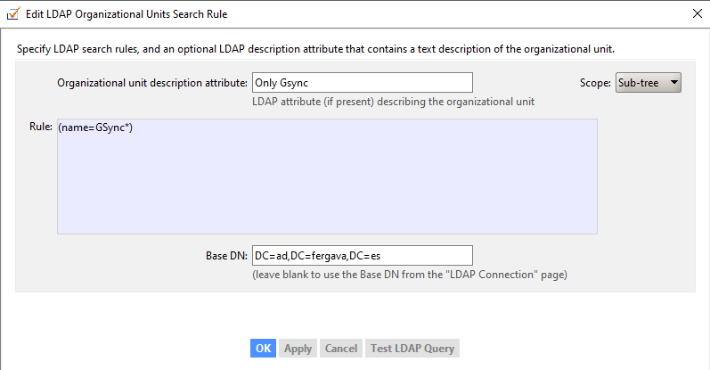
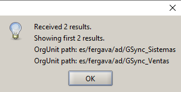
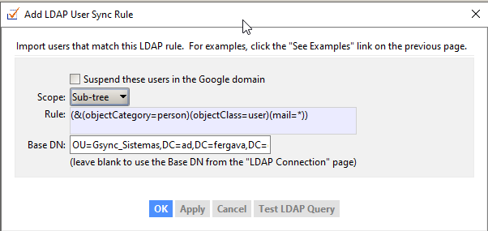
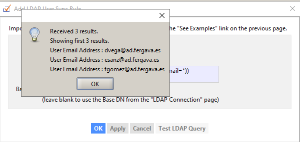
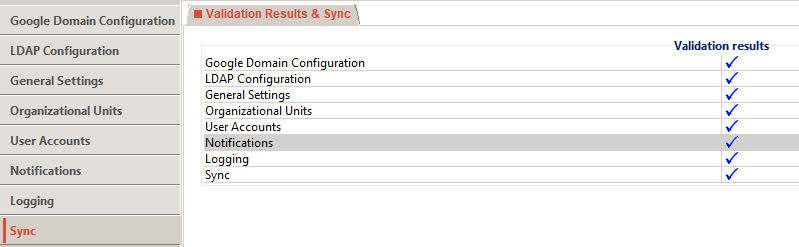
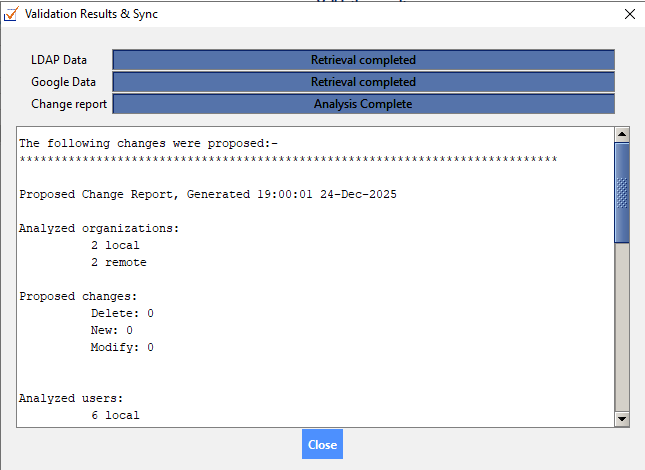

GCDS Configuration Lab
Google Cloud Directory Sync (GCDS) es el puente unidireccional que permite replicar identidades desde tu infraestructura local (Active Directory) hacia Google Workspace.
> Data_Flow_Topology
Flujo de Sincronización: El servidor GCDS extrae la información del DC, la procesa y empuja los cambios a la API de Google.
ℹ Best Practice: Arquitectura
La herramienta GCDS se ha instalado en un Servidor Miembro (Member Server) unido al dominio, separado del Controlador de Dominio (DC) por seguridad y rendimiento.
Creación Service Account
📍 Active Directory Users and ComputersAntes de instalar nada, necesitamos un usuario en el AD para que GCDS pueda leer el directorio.
- Username svc_gcds
- Member Of Domain Users (Lectura es suficiente)
- Password Options "User cannot change password" + "Password never expires" (CRÍTICO)
Google Domain Configuration
📍 GCDS > Google Domain Configuration > Connection SettingsConectamos con el inquilino fergava.es. La opción "Replace domain names" sirve para cambiar sufijos (ej: @local -> @nube). En este caso, como los usuarios locales ya son idénticos a los de la nube, la dejamos DESMARCADA.
- Primary Domain Name fergava.es
- Replace domain names UNCHECKED (No necesario si los UPN coinciden)
Exclusiones
📍 GCDS > Google Domain Configuration > Exclusion RulesSi no configuras una Regla de Exclusión explícita (Type: User Email Address), GCDS borrará tu cuenta de admin porque no existe en el AD.
Configuramos una regla para excluir todo el dominio raíz (@fergava.es), donde residen los administradores, y así proteger esas cuentas críticas de la nube.
- Type User Email Address
- Match Type Regular Expression
- Rule ^.+@fergava\.es$ (Protege a todos los usuarios @fergava.es)
LDAP Configuration
📍 GCDS > LDAP ConfigurationConfiguramos el túnel hacia el DC. Nota: Para usar el puerto 636 (SSL) es obligatorio instalar certificados en el DC previamente. En este laboratorio usamos LDAP estándar.
- Connection Type Standard LDAP (Port 389) - ⚠ Texto Plano
- Host Name 192.168.1.2 (DC IP)
- Authorized User AD\svc_gcds (Cuenta de servicio creada anteriormente)
- Base DN DC=ad,DC=fergava,DC=es (Sintaxis: ad.fergava.es ➔ DC=ad,DC=fergava,DC=es)
General Settings
📍 GCDS > General SettingsEste es el "panel de control" donde decidimos qué módulos activar. Al marcar una casilla aquí, se habilitan las pestañas correspondientes en el menú izquierdo.
- Organizational Units CHECKED (Replicar estructura de carpetas)
- User Accounts CHECKED (Sincronizar identidades)
- Groups UNCHECKED (Aún no configurado en este Lab)
Unidades Organizativas (OUs)
📍 GCDS > Organizational UnitsAntes de sincronizar usuarios, debemos replicar las carpetas (OUs). Usaremos Mapeo de Raíz para simplificar la estructura.
Atributos de Unidad Organizativa
Usamos una regla única: Mapeamos la raíz del AD (DC=ad...) directamente a la raíz de Google (/). Esto elimina automáticamente la jerarquía del dominio (es/fergava/ad) y deja las OUs limpias.
- Deletion Policy CHECKED: "Don't delete Google organizations not found in LDAP" (Seguridad)
| LDAP DN (Origen) | Google OU Name (Destino) |
|---|---|
| DC=ad,DC=fergava,DC=es | / |
Reglas de Búsqueda
En lugar de crear una regla por cada carpeta, usamos una Regla General con Comodín. Apuntamos a la raíz del dominio y filtramos solo las OUs cuyo nombre empiece por "Gsync".
- Base DN DC=ad,DC=fergava,DC=es (Raíz)
- Scope Sub-tree (Buscar en profundidad)
-
LDAP Filter (Rule)
(name=GSync*)
Busca cualquier objeto (que sea una OU) cuyo nombre empiece por "GSync". Es más eficiente y escalable.
Probar la Regla
Verificamos que GCDS encuentra correctamente las carpetas con el nuevo filtro.
Atributos de Usuario (User Attributes)
📍 GCDS > User Accounts > User AttributesDefinimos qué atributos de AD se usan para generar el email en Google.
-
Email Address Attribute
mail
Opción A (Recomendada): Usar
mailsi el campo "Email" está relleno en el AD.
Opción B: Si "Email" está vacío, usaruserPrincipalName(login). - Unique Identifier Attribute objectGUID (Recommended) (Permite renombrar usuarios sin romper el sync)
Atributos Adicionales
Configuramos el mapeo de nombres para que la Global Address List (GAL) muestre Nombre y Apellidos correctamente.
- Given Name Attribute (Nombre) givenName
- Family Name Attribute (Apellido) sn
Reglas de Usuario (User Rules)
📍 GCDS > User Accounts > Search RulesAquí definimos quién se sincroniza. Hacemos clic en "Add Search Rule" para especificar nuestras Unidades Organizativas (OUs) de origen. En este laboratorio, sincronizamos dos OUs separadas.
- Rule 1 (Base DN) OU=Gsync_Ventas,DC=ad,DC=fergava,DC=es
- Rule 2 (Base DN) OU=Gsync_Sistemas,DC=ad,DC=fergava,DC=es
-
Scope
Sub-tree
Busca en la carpeta seleccionada y en todas las subcarpetas (recursivo).
-
LDAP Filter
(&(objectCategory=person)(objectClass=user)(mail=*))
& = Y (Cumplir todo)
person/user = Es un usuario real (no PC/Printer)
mail=* = Tiene el campo 'Email' relleno⚠ Dependencia: Este filtro exige que el campo Email exista en el AD. Si estuviera vacío, la regla ignoraría al usuario. (Si no tuviéramos ese campo, usaríamos el UPN en la config de atributos).
Probar la Regla
Antes de guardar, es vital pulsar "Test LDAP Query" para confirmar que GCDS ve los usuarios correctos.
Configuración de Notificaciones
📍 GCDS > NotificationsConfiguramos el envío de logs por correo para monitorizar cada ejecución.
- SMTP Server smtp.gmail.com
- Port / Connection 587 (TLS)
- Auth User admin@fergava.es
-
Auth Password
App Password (Requerido si hay 2FA)
Nota: No uses tu contraseña de login. Genera una "Contraseña de aplicación" en tu cuenta Google.
- To / From admin@fergava.es
Sincronización y Simulación
📍 GCDS > SyncPara acceder a esta pantalla y habilitar los botones, TODAS las secciones anteriores del menú lateral deben tener el check verde ✅ de validación. Si falta alguna, revisa los pasos anteriores.
Verificación final. Antes de aplicar cambios reales, es obligatorio ejecutar una simulación para detectar errores catastróficos (como borrados masivos).
Simulate Sync
Pulsamos "Simulate Sync". El sistema analizará diferencias sin tocar nada en Google.
🔍 Análisis de Resultados
Como las OUs y usuarios ya existen en ambos lados (y hemos configurado el Mapeo de OUs correctamente), la simulación no debería mostrar creaciones masivas ni borrados.
Si todo está correcto (Proposed changes: Delete 0), significa que GCDS ha emparejado (matched) correctamente los objetos locales con los de la nube.
Aplicar Cambios
Una vez satisfechos con el resultado del test, pulsamos "Sync & Apply Changes" para escribir los cambios en Google de forma definitiva.
Automatización
📍 Windows Task SchedulerUna vez validada la simulación y ejecutada la primera sincronización manual con éxito, creamos la tarea programada.
Guardar Configuración
¡Importante! Guarda la configuración (File > Save) con un nombre reconocible (ej: config.xml) en una carpeta simple (ej: C:\GCDS\). No uses el nombre por defecto.